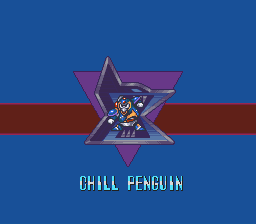
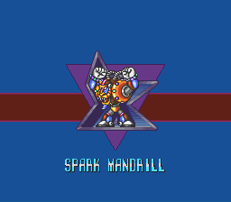
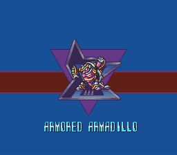
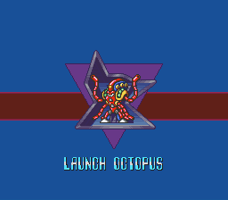
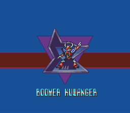
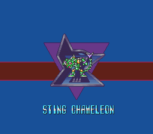
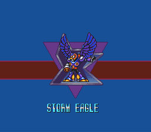
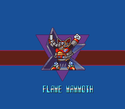

Por que a ordem dos chefes é importante?
Nos jogos da série Mega Man X, a ordem em que você enfrenta os chefes faz muita diferença na sua progressão.
Cada Maverick derrotado concede uma arma especial que normalmente é a fraqueza de outro chefe,
criando uma sequência estratégica que facilita muito as batalhas.
Seguir uma ordem eficiente permite derrotar chefes mais difíceis com muito menos esforço,
além de ajudar a conseguir upgrades importantes, como Heart Tanks e armaduras, com mais facilidade.
Explorar as fases na ordem correta também evita backtracking desnecessário, já que algumas áreas
só podem ser acessadas com habilidades específicas obtidas ao derrotar certos chefes.

Chill Penguin
O melhor chefe para começar o jogo, move-set básico e toma muito dano para o buster. Sua fraqueza é o fire wave, arma do Flame Mammoth, e a arma adquirida é o shotgun ice. Na sua fase se encontra o upgrade das pernas(o dash), além do Heart Tank que tem em todas as fases de chefes.

Spark Mandrill
Chefe ágil e forte, que pode ser travado facilmente usando Shotgun Ice. A arma obtida é o Electric Spark. Na sua fase há um Sub Tank.

Armored Armadillo
Esse chefe possui uma armadura que o torna imune a muitos ataques. Use o Electric Spark para destruí-la rapidamente. A arma adquirida é o Rolling Shield. A fase tem um Sub Tanks e a cápsula da Hadouken (se cumprir os requisitos).

Launch Octopus
Chefe aquático com ataques imprevisíveis e que pode recuperar energia. Sua fraqueza é o Rolling Shield. A arma obtida é o Homing Torpedo. A fase é submersa, com vários mini-chefes.

Bommer Kuwanger
Ágil, teleporta constantemente e tem um ataque que prende o jogador. Sua fraqueza é o Homing Torpedo. A arma adquirida é o Boomerang Cutter, útil para pegar itens distantes.

Sting Chameleon
Chefe que fica invisível e ataca com espinhos. Sua fraqueza é o Boomerang Cutter. A arma adquirida é o Chameleon Sting. A fase contém uma cápsula da armadura (upgrade de corpo), mas para acessá-la é necessário o dash.

Storm Eagle
Seu padrão de ataque é previsível e possui uma arena ampla. A fraqueza dele é o Chameleon Sting, obtido com o Sting Chameleon. Ao derrotá-lo, você adquire o Storm Tornado, uma das melhores armas do jogo. Sua fase contém um Sub Tank, uma cápsula da armadura (capacete que quebra blocos).

Flame Mammoth
Um chefe grande, lento, mas com ataques fortes. Se a fase do Chill Penguin foi vencida antes, sua fase fica congelada e mais fácil de explorar. A fraqueza dele é o Storm Tornado. A arma adquirida é o Fire Wave. Há um Sub Tank e uma cápsula de armadura(melhoria do buster) na fase.